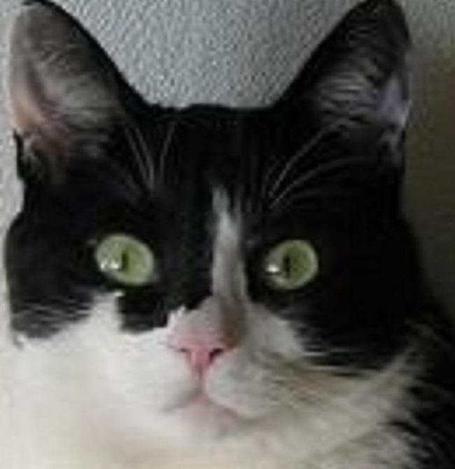

XXIII LE CHAT ET L'OISEAU
Le vol que tu suspends habite ton pelage,
Echo d'aile qu'au sol un caprice égara,
Et ne pouvant suivre l'essor que tu flairas
Ton jet enseveli est songe, attente, rage.
Bloc pareil au repos, pierre où la griffe dort,
Miroir mimant l'oiseau par sa lucarne d'or,
Mort à guetter tenace et semblable à ta mort,
Un ressort abattra le croc sur le volage.
Noces! L'amant subtil a couronné l'amour.
C'est en vain que l'oiseau veut regagner le jour.
Une patte de plomb le caresse et allume
En son aile un plaisir si tenace et si lourd
Que son envol brisé revêt tombeau de plumes.
Michel Galiana (c) 1992
|

|
XXIII CAT AND BIRD
The flight which you suspend haunts your quivering fur,
Echo of wings by some caprice strayed from the sky.
As you feel you could not follow the flight you spy,
Your buried bound is dream, expectation, anger.
Block similar to rest, rock wherein hides the claw
And that mirrors the bird through a golden window,
Stubborn death on the watch that is your death's fellow.
A spring will suddenly dash the hook on the flight.
Wedding, where love was crowned by a subtle lover.
It's in vain that the bird strives the day to regain.
A paw of lead caresses it and will retain
In its wing such a keen and tenacious pleasure
That its soaring, crushed, ends in a grave of feather.
Transl. Christian Souchon 01.01.2004 (c) (r) All rights reserved
|